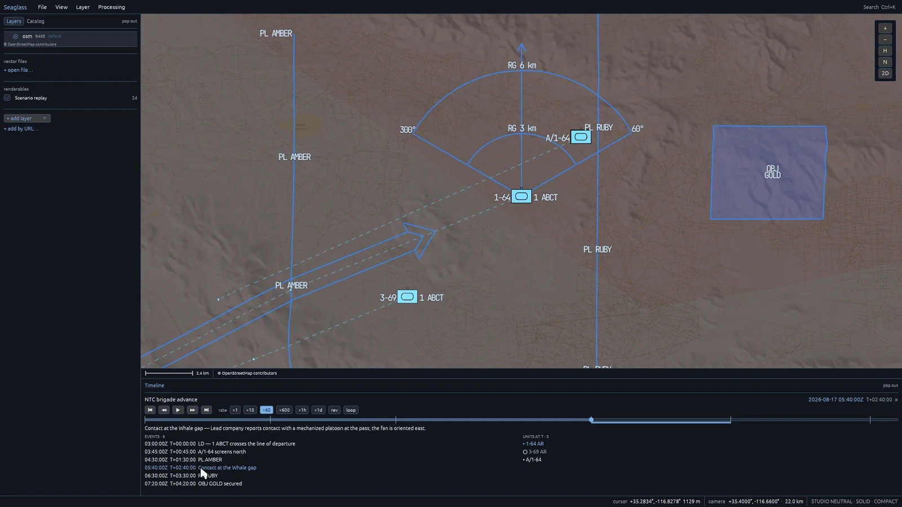

A WGS-84 ellipsoid, in double precision, all the way down
From orbit to a rooftop, in one move — the same globe the whole way down. Real geodesy with the method named beside every measurement, your own data on the stack, and military symbology on a timeline. The optional 3D view of the Forge suite, and the surface the agent draws on.
MIL-STD-2525C symbols and tactical graphics drawn on the map, and scenarios you can play, pause, and step through on a timeline.

What sits under the picture.
The engines are headless, and ForgeGIS Studio™ is where a person operates them on a flat map. When the Globe is running it is the agent’s presentation surface: visual answers — contours, elevation profiles, draped rasters — are drawn on the globe instead of only described, and the suite’s GPU engine, ForgeGIS™, runs from a workflow editor docked under the map.
The map credit is burned into the still on this page — never covered, never cropped. In legible form, with the terrain credit:
Map: © OpenStreetMap contributors, under the Open Database License.
Terrain: Mapzen Terrain Tiles (AWS Open Data); terrain data courtesy of the U.S. Geological Survey.
Type in the application: JetBrains Mono, SIL Open Font License 1.1.
Run the whole suite on one Windows x64 workstation with a real GPU, and watch the agent draw its answers on the globe. Seaglass Foundry™ reads every email.
rich@seaglassfoundry.com